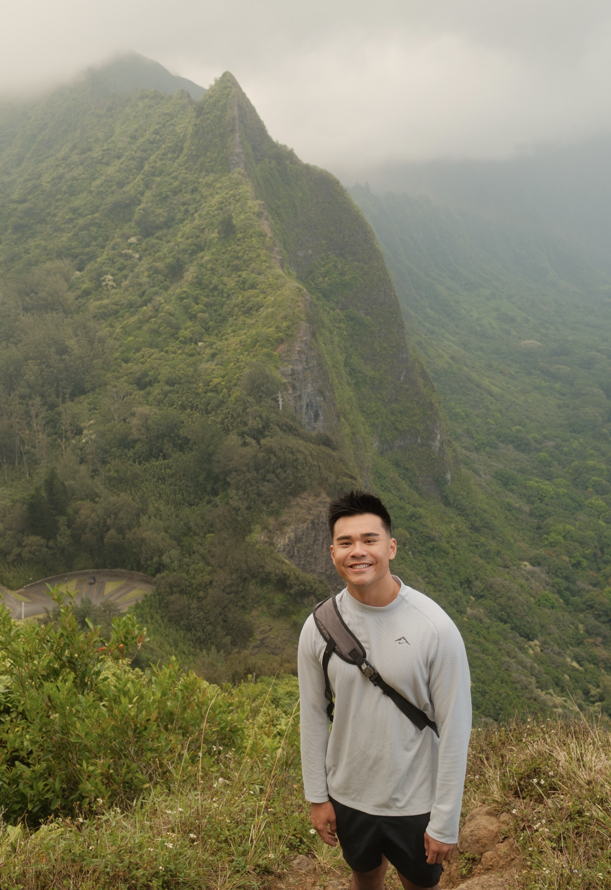

A little about me.
Product leader, builder, and a curious person outside the day job.
I’m a Principal Product Manager at Oracle, where I lead product strategy for OCI Functions. My work focuses on helping developers get from code to something they can run, understand, and trust.
Earlier at Oracle, I worked on internal developer platforms and contributed to Kubernetes product and partner initiatives. Before that, I worked on enterprise software implementations at Sitetracker and engineering programs at Cisco.
Outside the day job
Outside Oracle, I advise a small set of startups, small businesses, and family businesses across North America and Asia. The work ranges from product positioning and pricing to operations and technology decisions.
I like getting close enough to a business to understand what is slowing it down, then helping the team decide what to change first.
Where I come from
I grew up between Taipei and Orange County, which made me comfortable moving between different environments early.
I later earned a B.S. from UC Berkeley Haas and got more interested in the overlap between business and technology.
I grew up doing a lot of competitive math and community volunteering. That mix of analytical work and helping people still shapes how I think and how I like to work.
Away from the desk
Outside of work, I like being outdoors, hiking around the Bay Area, and shooting on Fujifilm. I grew up playing sports and still play basketball and volleyball when I can. More recently I’ve gotten into running and Barry's classes. I’m also a big anime fan, especially Frieren and Your Lie in April, and I spend time thinking about investing, real estate, and long-term bets on businesses.

The path so far
Oracle Cloud Infrastructure
Principal Product Manager, OCI Functions; earlier work in developer platforms and Kubernetes.
Sitetracker
Enterprise software implementations and customer workflows.
Cisco
Engineering program management for enterprise networking.